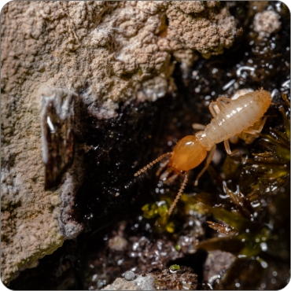
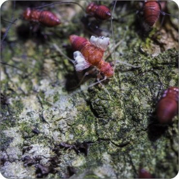

Termites Control
Treating Customers Like Family
Termites Control


Even buildings constructed on slabs of concrete block can face problems – termites can work their way up a structure, eating insulation along the way to get to wooden beams, roof supports, and more.
Termite infestations can put your business at risk in more ways than one:
- Structural damage and repair costs
- Safety concerns, liability and legal action
- Low occupancy rates and revenue loss
- Business disruption and closure for treatment
- Unwanted publicity or attention
Stop termites in their tracks with a proactive, preventative program from Rentokil. With over 100 years of experience in protecting businesses and homes from termites, we have solutions and the industry's most comprehensive warranty to protect your business and keep it termite-free for years to come.
Termites are small insects that live in colonies and have distinct castes (eusocial) and feed on wood or other dead plant matter, occurring on every continent except Antarctica.Owing to their wood-eating habits, many termite species can do significant damage to unprotected buildings and other wooden structures.Termites play an important role as decomposers of wood and vegetative material, and the conflict with humans occurs where structures and landscapes containing structural wood components, cellulose derived structural materials and ornamental vegetation provide termites with a reliable source of food and moisture.
What Are Termites?
Termite Facts
- Size: Termites are usually small, measuring between 4 to 15 millimetres (3⁄16 to 9⁄16 in) in length
- Alias : They are also being called the “silent destroyer” as they secretly hides and thrives in a home without any evident sign of damage.
- Appearance : The anatomy of the termite thorax consists of three segments: the prothorax, the mesothorax and the metathorax. Each segment contains a pair of legs. On alates, the wings are located at the mesothorax and metathorax, which is consistent with all four-winged insects. The mesothorax and metathorax have well-developed exoskeletal plates; the prothorax has smaller plates, can also be identified as can be identified by their straight, beaded antennae, uniform waists, and wings of equal size.
- A fourth item
- And a fifth one
Behaviour
Termites are generally mystifying, as they can’t be easily seen in the open that makes it difficult to detect. They can often be easily mistaken for ants. Most householders dismiss the termites as pesky ants and that leads to not taking any preventive or extermination measures. Thus, termite infestations can be grown exponentially as a result. The feeding habits are capable of causing costly damage to property.
Although termites feed on cellulose, found in wood but homes constructed primarily of wood are not the only structures threatened by termite activity. They are equally capable of damaging mud tubes, paper, insulation. Swimming pool liners and filtration systems Homes made from other materials also host termite infestations, as these insects are capable of traversing through plaster, metal siding and more. Termites then feed on cabinets, floors, ceilings and wooden furniture within these homes. The type of foundation your property is built on, has a big impact on how easy it may be for termites to gain entry in search of food. Although a lot of foundations nowadays are made of concrete - and termites do not feed on concrete - however, they can squeeze into any crack within these concrete blocks and from there gain access to floor beam, which are still made of wood. If you are building an extension, laying a chemical termite barrier beneath the concrete slab in order to prevent termites from traveling through foundation cracks. Homes with crawl spaces appear to be at greater risk of damage as their foundations are still traditionally made of wood.
Termite Flock Map
Subterranean Termites
Subterranean termites nest in the soil and migrate upward to feed on the wooden structures in home, they dwell underground in loose, damp soil. These termites can tirelessly attack your home 24/7 causing risky and costly structural damage,if left unidentified. They usually tunnel their way through wooden members, such as timbers in the structure of a house, as they search for cellulose, found in the plant cells of wood. As a rule, Subterranean termites travel above ground for food (cellulose) and underground for moisture. Subterranean termites also access above-ground food sources through mud tunnels they create from saliva, mud and feces. These tunnels are located near the foundation of infested homes.
What should I be mindful for?
Mud tunnels - They are most likely to attack from beneath the structure, gaining access through the smallest cracks and imperfections in the foundation. Subterranean termites build shelter tubes made of mud, dirt and debris in order to travel to and from the food source without being seen. These tubes are about the size of a coin and are usually found on exterior and interior walls leading up to the entry points of the building.
Formosan Termites
Formosan termites are one of the most aggressive and destructive types of termites. Like other termites, these termites are known for destroying wood by boring tunnels through walls. Just one Formosan termite colony can potentially contain more than 10 million individual termites taking up residence in a plot of soil.
What should I be mindful for?
Mud tunnels - Formosan termites may create mud tunnels above the surface to avoid exposure to light. These termites generally live underground and tunnel through the soil in search of food.
Drywood Termites
These types of termites nest in the dry wood primarily found in wood structures, frames, flooring and furniture. They receive all of their nutrition from wood and, unlike other termites, do not require moisture from soil. Drywood termites can create multiple colonies within a home. While they are uncommon in cooler climates, they can survive in northern climates under the right conditions.
Drywood Termites construct a virtual city within the wood. They carve out galleries in wood beams and use tunnels to move from place to place. They also swarm annually to start new colonies.
Drywood termite infestations may only become apparent after a colony has burrowed so deeply into an infested item that the veneer cracks and the maze-like tunnels beneath become visible. Such damage is common in antique furniture pieces.
What should I be mindful for?
Wood Cracks - The swarming termite can enter a structure by penetrating the smallest crack of imperfection in the wood.
Attic and eave areas - These are prime targets for swarmers in search of a nesting location, as are windowsills, baseboards, beams and door frames.
Furniture and construction materials - They can be introduced into an environment through infested furniture or construction materials.
Dampwood Termites
Dampwood Termites infest wood with high moisture content, creating tunnels while eating across the grain of the wood.
What should I watch out for?
Vulnerable wood - Wood in contact with the ground or with a high moisture content is vulnerable to attack.
Logs, stumps, dead trees, leaky pipes or gutters - These can also provide favorable conditions for Dampwood termites.
Common Signs of Termite Infestation
Termite Infestations
Termite infestations can compromise the structural stability of a home, and cause thousands of dollars in damage, without anyone even knowing. Thus, it’s important to get a termite inspection done by a licensed pest professional every one to three years to keep the property safe from termites. However, there are also some red flags signalling the presence of termites that homeowners can keep an eye out for on a regular basis. Here are the top five signs of termite infestation to look out for in your home.
Hotspots for termite infestation
These are too small for humans to see, found mainly in places such as baseboards, interior walls, window sills, under wooden floors, crawl spaces, and soffit areas. Occasionally, you may find signs of termite infestations in easier to reach places as in door frames, wooden furniture, door frames, and window frames. Termites aren't limited to wooden delicacies inside your home either; decks, patios, porches, tree stumps, sheds, and garages are also termite hotspots.
The first and most obvious sign of termite infestation are small, clear insect wings found scattered throughout the home's exterior and sometimes in the interior. Termites create new nests by flying to nearby locations; once they've landed at the perfect structure, they'll shed their wings and begin to reproduce.
The next sign of termite infestation may catch the eye of home or business owners that spend a lot of time outside—mud tunnels. These pencil-sized tubes are found protruding from exterior walls and provide termites with protection and moisture.
Termite Inspections
Termite Inspection
A termite inspection is exactly what it sounds like—an investigation to see if there are termites in or around your home. Like the extermination itself, a termite inspection typically isn’t a job for DIYers—it is a job best done by professionals.
A trained inspector (will) see things that you might miss.
Some of the things termite inspectors look for during an inspection include:
- Indentations in drywall, doors or window and wall facings
- Wood that sounds hollow when you knock on it
- Termite excrement (officially called frass, it resembles wood shavings)
- iny mud tunnels, usually near the foundation wall or any crack in the structure of the home (termites can build a whole system of interconnecting tunnels under your home)
- Actual termites
Termite inspectors will also check for signs of “swarmer’s.” These are the members of the colony that have wings. The insects will swarm, that implies leaving the original nest, when it’s time for them to venture out and start their own colonies. If termites are swarming, inspectors will either see them flying around or they will see little piles of termite wings in places like window sills and crawl spaces (when they drop their wings, that means they have found a mate).
The Indoor Inspection process
The inspector starts from the front door, checking thoroughly every room for evidence of infestation or decay damage. A special sounding tool is being used by the inspector for checking doorframes, gently probing suspicious areas to detect if wood has become hollow.
Next, he checks the wall surfaces, exit holes ceilings, floors, baseboards, dropped wings on door frames and window sills for any slightly raised areas in paint or under wallpaper. Any raised point indicates termite activity. He or she will also check for and. Afterwards, an examination is performed to examine cracks in cabinets as well as interior door and window frames.
The Outdoor Inspection process
The exterior inspection is being performed by the inspector by walking in a close proximity to the perimeter of the structure.
All wood to earth points of contact are thoroughly checked.
A detailed examination is done including mud tubes, drainage patters, sidings, windows and frames, downspouts and gutters
How to Get Rid of Termites
While you should leave termite removal to the professionals, knowing the methods they will use can help you in understanding how to kill termites, the best ways to treat the problem and help prevent it from recurring.
One popular method on how to get rid of termites involves treating the soil around your house with a termite insecticide, such as imidacloprid or fipronil. Wood can also be treated directly if termites are inside.
Termite baits are strategically placed around your yard to lure termites in. Once there, the termites are covered with a slow-acting insecticide or insect growth regulator. They then return to the colony and poison the other termites.
- Foam agents can be injected into areas liquid pesticides can't reach.
- Dust agents can be applied in areas where foam or liquid aren't practical.
- Fumigation kills all of the termites in an area but won't prevent their return.
- Don't disturb soil once it has been treated with termite-preventing chemicals.
Termite Prevention
Fly Control Process
jqube Pest Control has been treating termites for almost 40
years. We’re termite experts
and have a comprehensive process for finding, eliminating, and preventing termite
infestations.
01
Taking steps to prevent termites can save you a great deal of money. Moisture is an absolute necessity for termite colonies to survive and thrive, so eliminating damp areas around your house is essential to preventing termites.
02
Check for plumbing leaks, improper grading and leaky air conditioners to ensure that the ground near your home stays dry.
03
Eliminate as much wood-to-ground contact as possible.
04
If possible, replace the soil around your house with sand if you have wood touching the ground. Termites cannot build tunnels through the sand.
05
Avoid stacking firewood against your house and remove tree stumps from your yard.
06
Leave at least 6 inches of space between the ground and wooden decks, porches and patios.
07
Consider using termite-resistant wood in areas where wood must touch the ground, and be sure to pretreat wood when building a new house or renovating your old one.
08
Frequently clear gutters and drain spouts to prevent water buildup.
09
Have your home inspected regularly.
10
Cover openings on the outside of your house, such as vents, with termite-resistant steel mesh. This will allow ventilation to occur while preventing easy access for harmful pests.
11
If you take the necessary steps, and continue termite prevention and exterior home maintenance, you will keep termites away for good. Get your home regularly inspected by a professional to keep termites at bay.